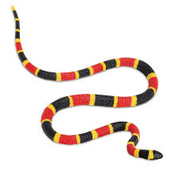
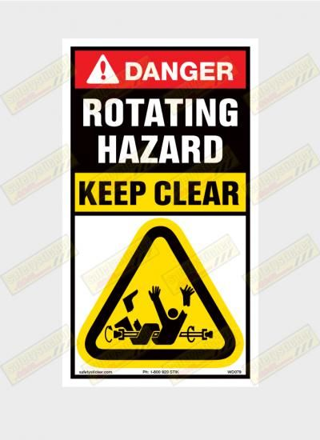

Week 2 — Descriptive Measures
aquire > parse > filter > mine > represent > refine > interact
How do we clearly describe the data we have?
Sensory bandwidth — picture first
Sight
~10,000,000 bits/s
Touch
~1,000,000 bits/s
Hearing
Smell
Point: When magnitudes differ by orders of magnitude, visual encoding beats text for attention + comprehension.
Sensory bandwidth — same blocks, separated
Sight
~10,000,000 bits/s
Touch
~1,000,000 bits/s
Hearing
~100,000 bits/s
Smell
~100,000 bits/s
Sensory bandwidth — bar chart
Sight
10,000,000
Touch
1,000,000
Hearing
100,000
Smell
100,000
Taste
1,000
Conscious
10–100
Linear scale (raw bits/s). Tiny categories collapse — that’s the point: visuals reveal dominance instantly.
Sensory Perception
Visual Perception Numbers 1
Memorize the first 7 digits of the first line.
88450962738635927503375196794306759962 17315904016941344340076296835915743375 16791197615733475195375920401694343151 23962135318493267660580062159638071399 50137145995438750765589253387561875035 40299811528639507112076134474558675309
Visual Perception Numbers 2
What are the last 7 digits of the last line?
Visual Perception Numbers 3
How many times does 5 appear in this dataset?
88450962738635927503375196794306759962 17315904016941344340076296835915743375 16791197615733475195375920401694343151 23962135318493267660580062159638071399 50137145995438750765589253387561875035 40299811528639507112076134474558675309
Visual Perception Numbers 3
How many times does 5 appear in this dataset?
Visual Perception — Line Length vs Thickness
Which line is longest? Which line is thickest?
Visual Perception — Line Length vs Thickness
Which line is longest? Which line is thickest?
Visual Perception — Line Length vs Thickness (10 lines)
Which line is longest? Which line is thickest?
Visual Perception — Line Length vs Thickness (30 lines)
Which line is longest? Which line is thickest?
Visual Perception — Area is hard
Small circle = 1. What are the values of the two large circles? (They differ by < 5.)
Visual Perception Areas
Visual Perception
Subtle Colors
Vivid Colors


